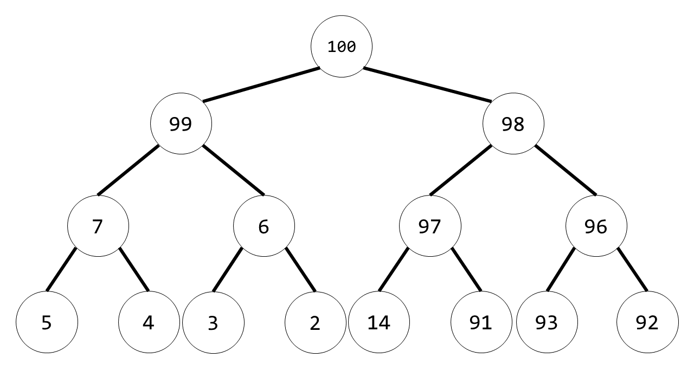
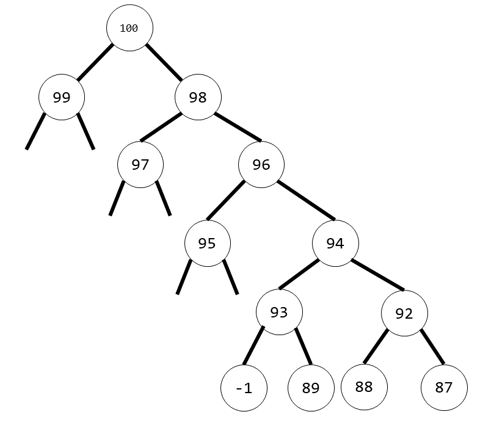

搜索解答
目前已完成到 2.5
2.4.14
上次更新：2019-02-11
发现了题解错误/代码缺陷/排版问题？请点这里：如何：提交反馈 。
题目
2.4.14
对于没有重复元素的大小为 N 的堆，一次删除最大元素的操作中最少要交换几个元素？
构造一个能够达到这个交换次数的大小为 15 的堆。
连续两次删除最大元素呢？三次呢？
解答
对于 n <= 2 的堆
第一步让最大元素和末端元素交换。
第二步下沉时由于 n <= 1，不需要交换。
故总共发生了一次交换，两个元素发生了交换。
对于 n = 3 的堆
第一步让最大元素和末端元素交换。
第二步如果末端元素大于另一侧的子结点，那么就不需要交换。
故最优情况时总共发生一次交换，两个元素被交换。
对于 n > 3 的堆。
第一步需要让最末端元素和最大元素交换。
由于堆中第二大的元素必定位于根节点之后。
故最末端元素一定小于该第二大元素。
因此在下沉操作时必定会和第二大元素进行交换。
故至少发生两次交换，总共有三个元素发生了交换。
构造的堆（n=15）

92 和 100 交换，随后 92 和 99 交换
构造最优情况堆的方式如下（取根结点为 100）：

对于每个结点，左子结点大于右子结点，
且左子结点的子元素都小于右子树的最小值，
（上例中省略了这部分元素，可以将它们当作负数）
于是第一次 DelMax 的时候，只需要两次交换，三个元素被交换。
（即 87 最后被交换到上例中 99 的位置）
第二次 DelMax 的时候，只需要三次交换，六个元素被交换.
（88 交换到 97 的位置）
因此当 n > 7 时，连续两次 DelMax() 最少只需要 5 次交换。
第三次 DelMax 的时候，只需要四次交换，九个元素被交换。
（89 交换到 95 的位置）
因此当 n > 15 时，连续三次 DelMax() 最少只需要 9 次交换。